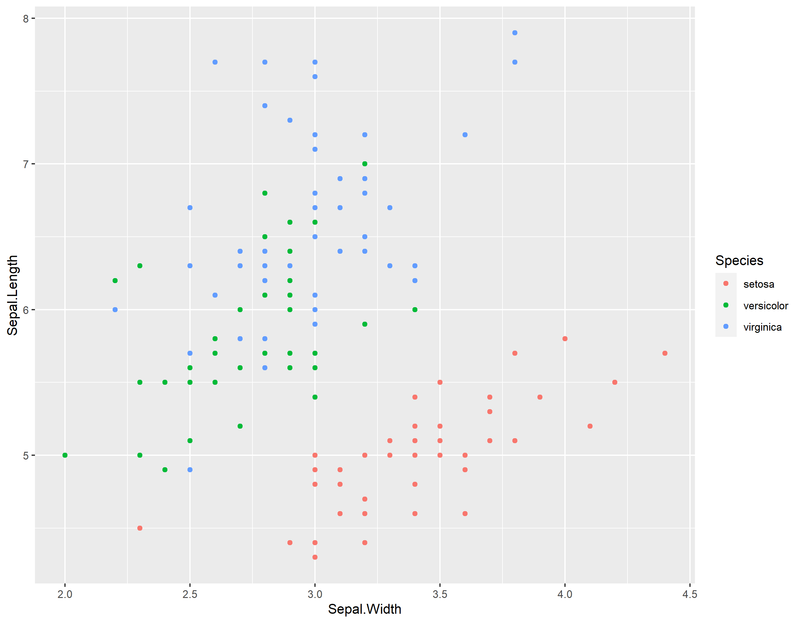
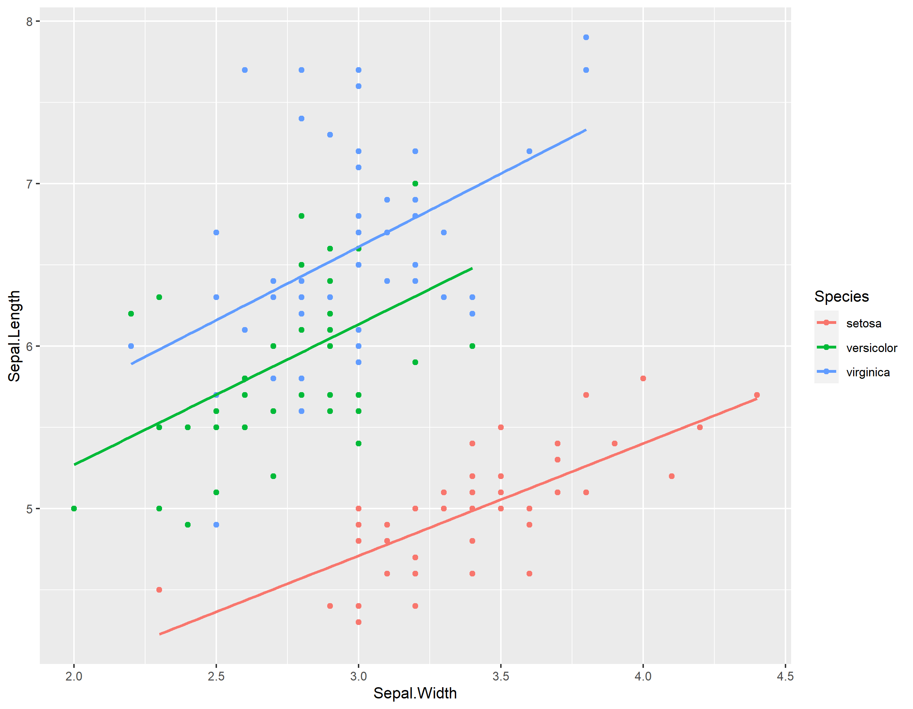
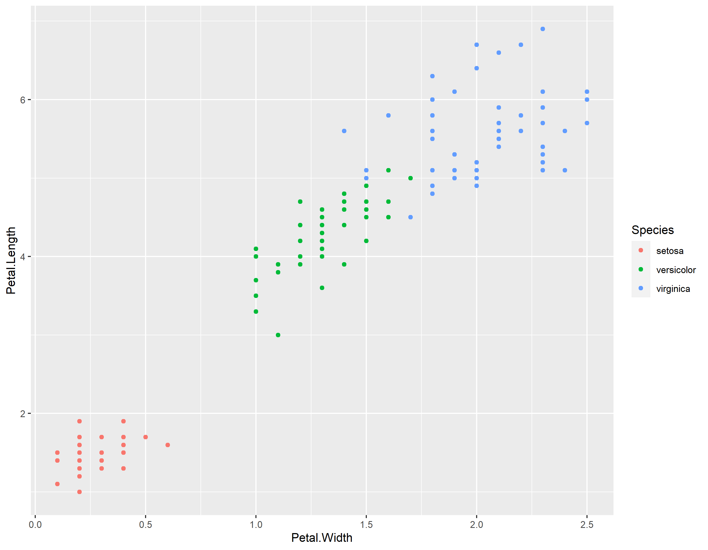
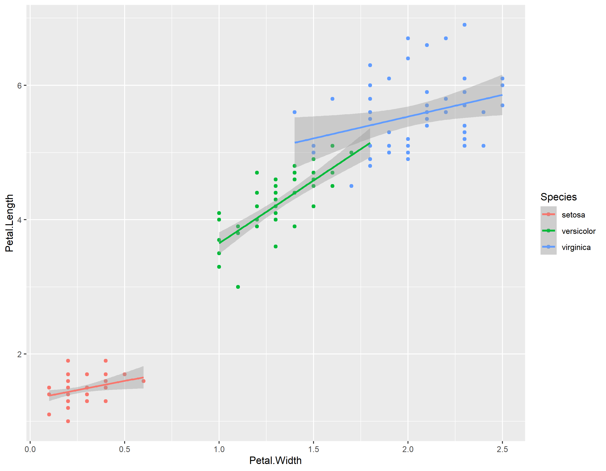
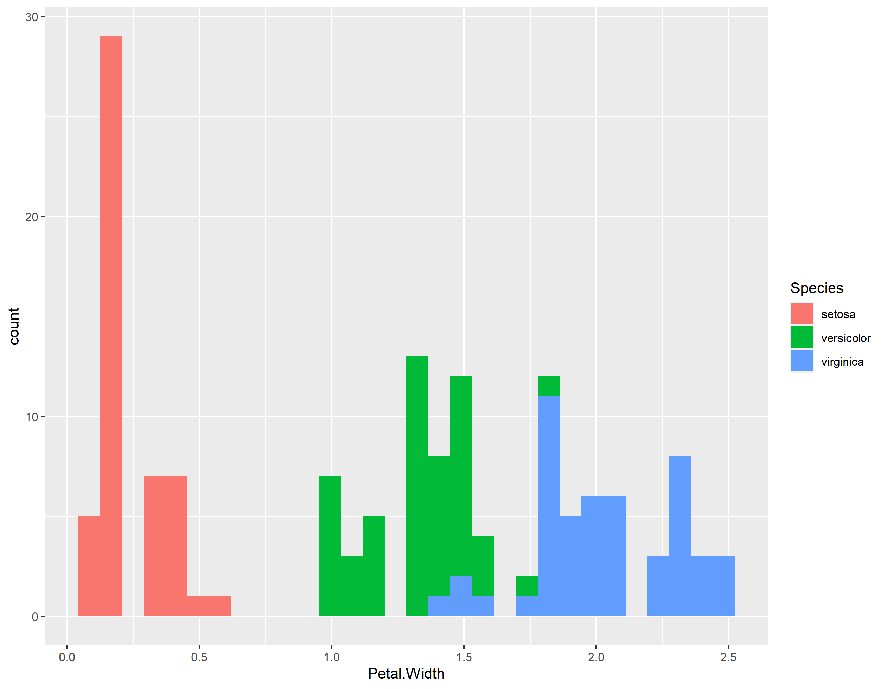
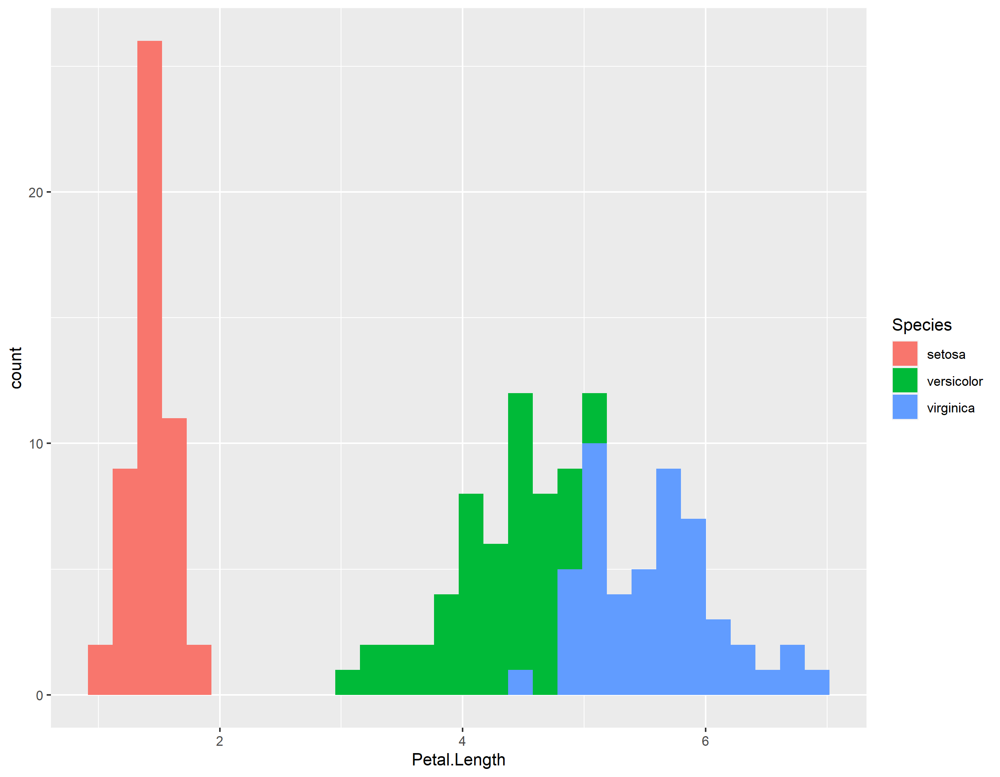

library(tidyverse)
data(iris)Explorando Dados
Carregando bibliotecas
O que temos aqui?
head(iris) Sepal.Length Sepal.Width Petal.Length Petal.Width Species
1 5.1 3.5 1.4 0.2 setosa
2 4.9 3.0 1.4 0.2 setosa
3 4.7 3.2 1.3 0.2 setosa
4 4.6 3.1 1.5 0.2 setosa
5 5.0 3.6 1.4 0.2 setosa
6 5.4 3.9 1.7 0.4 setosairis %>% count(Species) Species n
1 setosa 50
2 versicolor 50
3 virginica 50Quais são as médias?
iris %>%
group_by(Species) %>%
summarize(across(where(is.numeric), mean, na.rm = TRUE))# A tibble: 3 × 5
Species Sepal.Length Sepal.Width Petal.Length Petal.Width
<fct> <dbl> <dbl> <dbl> <dbl>
1 setosa 5.01 3.43 1.46 0.246
2 versicolor 5.94 2.77 4.26 1.33
3 virginica 6.59 2.97 5.55 2.03 Vamos ver se temos alguma relação entre as variáveis
iris %>%
group_by(Species) %>% ggplot(aes(x=Sepal.Width, y=Sepal.Length,
color=Species)) + geom_point()
Vamos ver se temos alguma relação entre as variáveis 2
iris %>%
group_by(Species) %>%
ggplot(aes(x=Sepal.Width, y=Sepal.Length, color=Species)) +
geom_point() + geom_smooth(method = "lm", se=FALSE)
Vamos ver se temos alguma relação entre as variáveis 3
iris %>%
group_by(Species) %>% ggplot(aes(x=Petal.Width, y=Petal.Length,
color=Species)) + geom_point()
Vamos ver se temos alguma relação entre as variáveis 4
iris %>%
group_by(Species) %>%
ggplot(aes(x=Petal.Width, y=Petal.Length, color=Species)) +
geom_point() + geom_smooth(method = "lm")
Vamos ver como se distribui o Petal.Width
iris %>%
group_by(Species) %>% ggplot(aes(x=Petal.Width,
fill=Species)) +
geom_histogram()
Vamos ver como se distribui o Petal.Length
iris %>%
group_by(Species) %>%
ggplot(aes(x=Petal.Length, fill=Species)) +
geom_histogram()